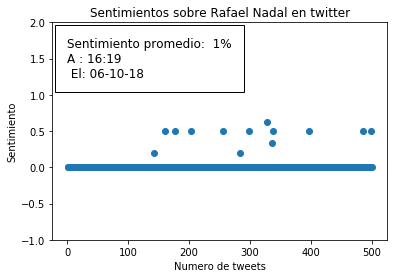

Análisis de Sentimiento de tweets con Python, TextBlob y tweepy
Posted on dom 10 junio 2018 in Tutorial Python • 3 min read
Existe el área de análisis de redes sociales, puedes hacer gráficos de tendencias, lograr cual fue el origen de un tweet. La idea es usar la librería tweepy para conectase a Twitter y de allí capturar los tweets para luego realizar un análisis de sentimiento y graficar el resultado.
El análisis de sentimiento se refiere al uso de procesamiento de lenguaje natural, análisis de texto y lingüistica computacional para identificar y extraer información subjetiva de los recursos (más información en wikipedia).
Se puede realizar análisis de sentimiento a cualquier texto, puede ser de correos, de páginas web, de publicaciones en redes sociales como twitter, facebook, google+, entre otros. Con ello se puede lograr un aproximado de la evaluación emocional que tiene un tema o persona en algún momento en las redes sociales o contenidos evaluados.
La idea es obtener el tráfico de twitter sobre un tema o persona, aplicarle análisis de sentimiento y graficar los resultados.
Este artículo se basa en un artículo en inglés publicado en freecodecamp con título Basic data analysis on Twitter with Python. Este artículo se desarrolla una aplicación gráfica en TK para obtener la información y luego realizar la captura, cálculos y gráficos. El código fuente de la aplicación del artículo se encuentra en github.
Para tener acceso al API de twitter se tiene que crear una cuenta en la página para las aplicaciones que lo requieran.
Para autenticarse se usará el siguiente código:
consumer_key = 'consumer key'
consumer_secret = 'consumer secrets'
access_token = 'access token'
access_token_secret = 'access token secret'
auth = tweepy.OAuthHandler(consumer_key, consumer_secret)
auth.set_access_token(access_token, access_token_secret)
api = tweepy.API(auth)
En este caso se usará jupyter lab para mostrar la aplicación con ajustes en el código para su reutilización, por ejemplo, que realice el análisis en Español o Inglés.
La librería a usar será tweepy, la librería para análisis de texto TextBlob y matplotlib.
Para instalar tweepy se usará pip3:
pip3 install tweepy textblob
Revisemos primero las tendencias en twitter para Valencia (Venezuela), a continuación una imagen de las tendencias.
Se buscará el análisis de sentimiento de la tendencia Rafael Nadal, se buscará en 200 tweets y en español.
A continuación el código fuente:
El código fuente en el repositorio de gitlab lo pueden ver en el enlace.
#!/usr/bin/env python3
#Se importa la librería tweepy
import tweepy
#Se importa sleep, datetime, TextBlob y matplotlib
from time import sleep
from datetime import datetime
from textblob import TextBlob
import matplotlib.pyplot as plt
#Se define las variables para el acceso al API de twitter
consumer_key = ''
consumer_secret = ''
access_token = ''
access_token_secret = ''
#Se autentica en twitter
auth = tweepy.OAuthHandler(consumer_key, consumer_secret)
auth.set_access_token(access_token, access_token_secret)
api = tweepy.API(auth)
#se verifica que el usuario conectado en twitter es de uno
print(api.me().name)
#Se pregunta por la palabra a preguntar
palabra = input("Buscar: ")
#Se define la cantida de tweets a capturar
numero_de_Tweets = int(input(u"Número de tweets a capturar: "))
#Se define el idioma de los tweets a analizar
lenguaje = input("Idioma [es/en]:")
def ObtenerTweets(palabra="Trump",times=100,leguanje="en"):
#Se define las listas que capturan la popularidad
popularidad_list = []
numeros_list = []
numero = 1
for tweet in tweepy.Cursor(api.search, palabra, lang=lenguaje).items(numero_de_Tweets):
try:
#Se toma el texto, se hace el analisis de sentimiento
#y se agrega el resultado a las listas
analisis = TextBlob(tweet.text)
analisis = analisis.sentiment
popularidad = analisis.polarity
popularidad_list.append(popularidad)
numeros_list.append(numero)
numero = numero + 1
except tweepy.TweepError as e:
print(e.reason)
except StopIteration:
break
return (numeros_list,popularidad_list,numero)
def GraficarDatos(numeros_list,popularidad_list,numero):
axes = plt.gca()
axes.set_ylim([-1, 2])
plt.scatter(numeros_list, popularidad_list)
popularidadPromedio = (sum(popularidad_list))/(len(popularidad_list))
popularidadPromedio = "{0:.0f}%".format(popularidadPromedio * 100)
time = datetime.now().strftime("A : %H:%M\n El: %m-%d-%y")
plt.text(0, 1.25,
"Sentimiento promedio: " + str(popularidadPromedio) + "\n" + time,
fontsize=12,
bbox = dict(facecolor='none',
edgecolor='black',
boxstyle='square, pad = 1'))
plt.title("Sentimientos sobre " + palabra + " en twitter")
plt.xlabel("Numero de tweets")
plt.ylabel("Sentimiento")
plt.show()
numeros_list,popularidad_list,numero = ObtenerTweets(palabra,numero_de_Tweets,lenguaje)
GraficarDatos(numeros_list,popularidad_list,numero)
Al ejecutar el programa se tiene la siguiente gráfica.

Para el caso de Nadal, tiene un valor promedio positivo, habrá casos donde el sentimiento sea de un valor negativo, pero para este caso, lo mejor es ampliar la cantidad de tweets a capturar para tener una mejor aproximación del sentimiento de la gente de lo que habla en twitter de Nadal.
Sí tienes alguna pregunta u observación, puedes hacerlo en los comentarios del post.
¡Haz tu donativo! Si te gustó el artículo puedes realizar un donativo con Bitcoin (BTC) usando la billetera digital de tu preferencia a la siguiente dirección: 17MtNybhdkA9GV3UNS6BTwPcuhjXoPrSzV
O Escaneando el código QR desde la billetera: